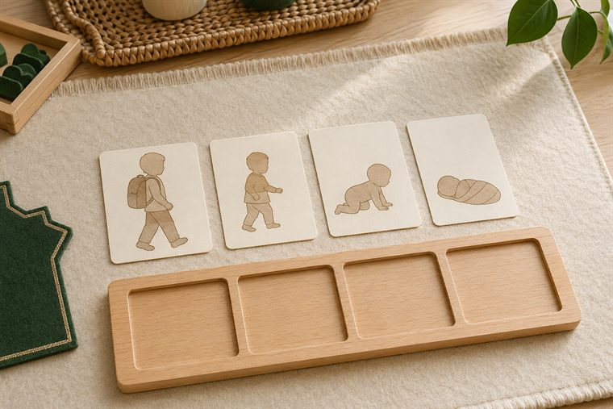
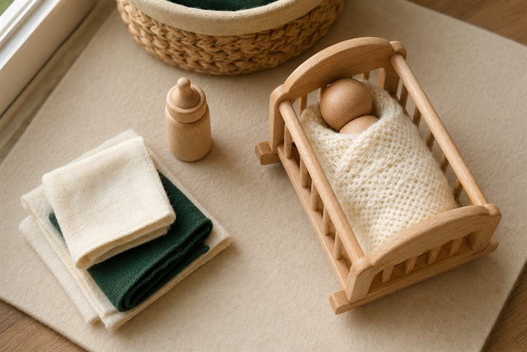
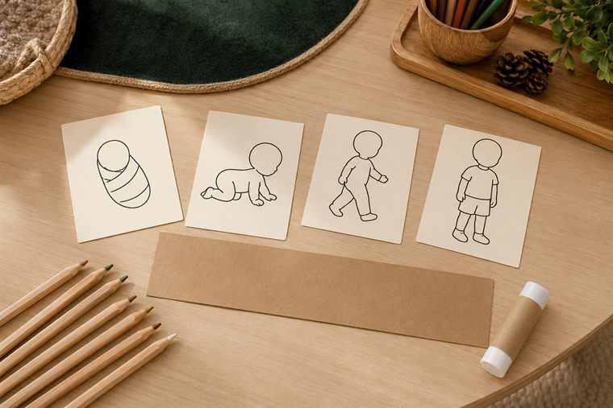
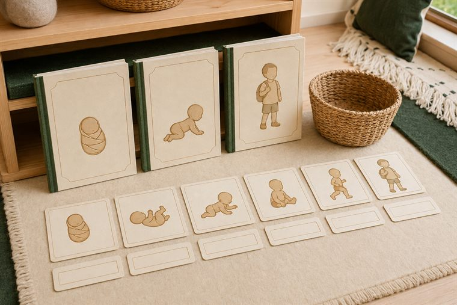

مساحاتُ لعبٍ حرّ بأدواتٍ تعليمية. لكثرة الأعداد نفتح ٤ أركانٍ متوازية بمراكز مختلفة؛ وزّعي المجموعات عليها وتتناوب بينها في الفترتين حتى لا تتكدّس. كل ركنٍ لمسةٌ تطبيقية خفيفة على فكرة اليوم. (أعمار ٥–٦: بناء/تلوين جاهز/قصّ ولصق/ترتيب/اختيار بطاقات/أدوار/حركة — بلا كتابة أو رسمٍ حرّ.)
دروس اليوم المتكاملة: كتابي المنير (معنى لفظ النبأ) · علّمني ربي (مراحل خلق الإنسان) · أحبّك ربّي (الرّبّ: ربُّ العالمين) · أدب واقتداء (آداب اللباس: التيامن) · قال رسولي (احفظ الله يحفظك).

🧩 أدرك وأستمتع · «أرتّبُ مراحلَ نموّي»
يرتّبُ الطفل بطاقاتِ نموّه المرئيّ (مولودٌ ملفوف ← طفلٌ يحبو ← طفلٌ يمشي ← طفلٌ في الروضة)، ويحاورُ: مَن ربّاني وكبّرني؟ (نبدأ من المولود بلا تجسيدٍ لأطوار الرحم.)
🧰 الأدوات: بطاقاتُ مراحل النموّ المصوّرة الجاهزة · لوحةُ ترتيبٍ مصوّرة · سِلالُ تصنيف.
📋 دور المعلمة: تنمذجُ ترتيبًا واحدًا ثم يستكشفُ الطفل؛ تربطُ النموَّ بتربية الرّب: «ربُّ العالمين ربّاك وكبّرك».
🌱 المعنى المركزي: اللهُ ربّى نموّي طورًا بعد طور؛ فأشكرُ ربّي.
📜 قوانين الركن: أبقى في ركني حتى ينتهي الوقت · أحافظ على أدواته · أتشارك وأنتظر دوري · أُعيد الأدوات مرتّبة.

🏠 الإيهام · «أعتني بالمولود وأشكرُ ربّي»
لعبُ أدوارٍ للعناية بالمولود بدُمًى خشبية بلا ملامح (لفٌّ · إطعامٌ بالرضّاعة · تنويم)، مع ترديدِ شكرِ الرّب الذي ربّانا صغارًا لا نقدرُ على شيء.
🧰 الأدوات: دُمًى خشبية بلا ملامح · بطانيّاتٌ ورضّاعاتُ لعب · سريرُ دُمًى.
📋 دور المعلمة: تُدير اللعبَ الحرّ ثم تسأل: «مَن رَبّاك حين كنت صغيرًا لا تقدر على شيء؟»؛ تنسبُ التربيةَ للرّب.
🌱 المعنى المركزي: ربُّ العالمين تولّى تربيتي صغيرًا؛ فأحبّه وأشكره.
📜 قوانين الركن: أبقى في ركني حتى ينتهي الوقت · أحافظ على أدواته · أتشارك وأنتظر دوري · أُعيد الأدوات مرتّبة.

🎨 فنوني الجميلة · «ألوّنُ مراحلَ النموّ وألصقها بالترتيب»
يلوّنُ الطفل بطاقاتِ نموٍّ جاهزة (مولود · حبوٌ · مشيٌ · روضة)، ثم يلصقها متسلسلةً على شريطٍ بالترتيب الصحيح، ويردّدُ «ربّاني ربّي وكبّرني».
🧰 الأدوات: بطاقاتُ نموٍّ جاهزة للتلوين · أقلامُ تلوين · شريطُ لصق · لاصق.
📋 دور المعلمة: تُسمّي المراحلَ وتنسبُ التربيةَ للرّب المربّي؛ تُثني على المشاركةِ والفرحِ لا على الإتقان الفنّي.
🌱 المعنى المركزي: نموّي نعمةٌ من الرّب المربّي؛ فأحمده.
📜 قوانين الركن: أبقى في ركني حتى ينتهي الوقت · أحافظ على أدواته · أتشارك وأنتظر دوري · أُعيد الأدوات مرتّبة.

📚 أقرأ · «قصّةُ نموّي ونِعَم ربّي»
يتصفّحُ الطفل قصصًا مصوّرة عن نموّ الطفل ونِعَمِ الله عليه، ويطابقُ كلمةَ اليوم بصورتها (طفل · نموّ)، ويتذكّرُ «احفظ الله يحفظك».
🧰 الأدوات: قصصٌ مصوّرة عن النموّ والنِّعَم · بطاقاتُ مطابقةِ كلمة-صورة · مصاحفُ في حواملها.
📋 دور المعلمة: تقرأُ بهدوءٍ وتحاورُ عن «احفظ الله يحفظك»؛ تربطُ القراءةَ بمعرفةِ فضلِ الرّب.
🌱 المعنى المركزي: أقرأُ فأعرفُ فضلَ ربّي فأحفظُ حدوده.
📜 قوانين الركن: أبقى في ركني حتى ينتهي الوقت · أحافظ على أدواته · أتشارك وأنتظر دوري · أُعيد الأدوات مرتّبة.
تفاصيلُ الأركان الستّة وروتينُها في تبويب «خريطة الأركان» أعلى الصفحة، ولكلِّ لقاءٍ ركنان تطبيقيّان داخل دليله.